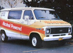
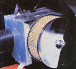
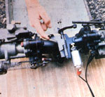

Here's the latest project in our ongoing ethanol research program:
Well over a year ago, this publication detailed an alcohol fuel conversion performed on an experimental six-cylinder Chevrolet pickup truck (see page 78 in MOTHER NO. 59). Since that time-in the true spirit of research-MOTHER has continued her firsthand investigation into both the production and use of the renewable liquid energy form.
Our latest alternative-fueled vehicle is a 1977 Chevy 1/2-ton van equipped with a 250-cubic-inch "six" ... an automatic transmission . . . and a "flip-of-the-switch", genuinely efficient dual-fuel system! The modest hauler has racked up over 12,000 trouble-free miles in its gasoline/alcohol configuration, and it serves MOTHER's traveling seminar crew as both a workhorse and an eye-opening educational tool . . . while also providing an excellent test bed for other automotive research.
DOUBLE-BARRELED AND DRIVABLE
As you might imagine, our twin-fuel system is based upon two carburetors. The van's original Rochester downdraft model was replaced with a pair of sidedraft Carter YH's (an older automotive carb that's now widely used in marine applications) mounted on a homebuilt "Siamese" Y manifold that was fabricated from muffler tubing and flanges. The front "fuel mixer" is relatively unchanged and runs on gasoline, while the rear atomizer has been modified to suit the requirements of ethanol. Both mechanisms are individually controlled by a solenoid-operated selective sliding throttle linkage made from some flat stock and-believe it or not a 4" door hinge.
Rather than heat the alcohol fuel, as we did on our first test truck, we chose to preheat the air entering the ethanol carburetor (from ambient temperature to 170°F) in order to improve vaporization. We also took advantage of the liquid's high "octane" rating by automatically advancing the timing when burning alcohol, while carefully controlling spark "progression" in the gasoline mode to guarantee "knock-free" performance.
THE "BORING" DETAILS
As you might imagine, the latest conversion was a good deal more involved than was that of our original Chevy six . . . and for two good reasons. Primarily, our goal was to improve both fuel economy and vehicle drivability beyond what we'd achieved in the initial conversion (although both were certainly acceptable for an admittedly experimental vehicle). Consequently, we chose to use the horizontal-style carburetors . . . not only because they offered the convenience of dual-fuel capability, but also because their sidedraft design afforded the least restrictive fuel flow from the float bowl to the "booster" venturi area within the mechanism's throat . . . though some of the internal passageways still did need modification. (Conventional downdraft carbs would require reworking, too, but might not perform as well because of their "serpentine" fuel-feed galleries.)
So-armed with flat and needle-nosed pliers, a screwdriver, a wire gauge set, and a complete assortment of drill bits (numbered sizes 1 to 80, plus one 19/64" version)-MOTHER's car doctors prepared to perform surgery on the alcohol-carburetor-to-be, after first dismantling the unit and cleaning it thoroughly with solvent. (This preparatory operation included the removal of the press-fit plugs that sealed the factory-drilled fuel passageways from the outside.)
The first step involved enlarging the main jet from .080" to .104", for a total diameter increase of 30%. Then the accelerator pump discharge nozzle diameter was increased by 20%, from .025" to .030". Next-to improve the engine's transition from idle to cruising speeds-the idle transfer slot (part of a circuit that supplies nearly all of the necessary air/fuel mixture during normal driving at speeds below 40 MPH) was expanded from .020" to .059", and two .043" holes were drilled at the "upstream" end of the slot, in line, to further enhance smooth performance during "off idle" operation. Finally, the idle screw passageway leading from the needle's tapered tip to the throttle bore was enlarged-to provide a wider range of adjustment-from .066" to .076", and the float height was raised by 3/16".
At that stage of the conversion, preliminary testing indicated that, although the carburetor was fairly well calibrated according to the exhaust analysis equipment, there was still a slight hesitation in the transition from slow to midrange speeds . . . and the higher float level resulted in an occasional fuel "dribble" into the carb throat through the main booster jet outlet.
The second phase of modification, then, included drilling a "sight hole" in the side of the float bowl so that the port's lower edge was about 1/10" below the dripping orifice, plus visually setting the float to eliminate the leakage and tapping the inspection hole so a threaded brass plug could be installed after final adjustments were made. In addition, all the idle circuit passageways within the carburetor were drilled out to .149", and the idle fuel restrictors and other potential problem areas (such as gasket perforations and casting burrs) were altered or removed.
At the same time, the idle fuel jet in the main well was increased in diameter from .024" to .039", and the idle air bleed was enlarged by 62%, to .073". (These alterations were made to increase both the amount and velocity of air/fuel mixture delivered to the engine from idle to 20% of full throttle position.)
Final alterations were as follows: Both the primary and secondary main fuel wells were enlarged to .300" in diameter (these reservoirs hold a supply of fuel "in waiting" between the main jet and the venturi supply tubes, for use the instant the throttle is cracked open . . . thus providing the extra-rich fuel mixture to the engine as soon as it's needed), and a main well air bleed was added, by drilling a .025" hole-obliquely-from a point near the top of the secondary main fuel well directly into the carburetor throat and ahead of the booster venturi section of the carburetor. (This passageway-a standard feature on newer carbs-supplies positive air pressure to the fuel wells to insure faster liquid movement and better response.)
Also, a new air/fuel mixture tube was fabricated to replace the original booster distribution jet, which had a restrictive central corridor and did not allow for an air mix. A .128"-inside-diameter brass tube, with the same overall length and outside diameter as the jet, was "slash cut" on one end at an angle of about 10°. Then four .040" holes were cross-drilled approximately 1 inch from this angled outlet end of the pipe. After removing the old jet with a 1/8" drill, the new fuel/air mixing assembly was pressed into place and held fast with a drop of Locktite brand stud mount. Such a combination booster and blending jet serves to atomize the fuel quite effectively.
THE "MIXING" LINK?
Individual throttle control for each carburetor was accomplished, inexpensively, by adapting a Stanley door hinge-and some spare parts-to do "double duty". Its pin was removed, eventually to be replaced with a similar rod about 2" longer, with a 1/16" hole drilled at one end and a knurled head at the other. Then the three "knuckles" of an extra hinge plate were ground down at their shoulders to allow about 1/4" of lateral play in the component once it was positioned "around" the main hinge (see photo).
Next, the triple-knuckled plate from the hinge set was cut into three sections -each having one "loop"-and its two- cylindered mate was permanently fastened to the top of the Y manifold, in an upright position. At this point, three control "arms" were welded onto their respective hinge sections, and holes were drilled through each to accept throttle rods. The linkage was then reassembled, using the long pin as a pivot. (The extra length was added to accommodate the third hinge plate and the spring at one end-held fast with a cotter pin-which lets the whole shebang slide sideways and function without binding.)
Finally, an "anti-dieseling" solenoid from a GM V-8 was installed to automatically move the "master" plate right or left, depending on which carburetor is to be controlled.
Happily, the apparatus functions well in both theory and practice: When the solenoid shaft extends to the left and the accelerator is depressed, the center plate pushes down on the hinge section that activates the alcohol carburetor. At the flip of a switch, the solenoid arm returns to the right-along with the master plate-and the gasoline carb is ready for action.
With this setup, it's not necessary to in corporate individual fuel shut-off valves for the "dormant" carburetor . . . the unused mechanism merely rests in its "idle" position-atomizing no fuel-while the other carb functions normally. (This occurs because such a great volume of air is flowing through the in-use device that there's not sufficient "draw" to pull fuel from the inactive one.) In addition, there's a less obvious benefit to this arrangement. When the engine is idling (in either fuel mode), both the carburetors-which, of course, "draft" equally at idle-can be adjusted to provide nearly any "balance" of gasoline/alcohol ratio desired . . . a feature that allows the engine to operate very smoothly on low-proof ethanol at idle and starting speeds, thanks to the addition of a small petrol "boost".
ONE LIKES IT HOT
Warming the alcohol carburetor's air supply notably improves the carb's ability to vaporize the stubbornly liquid fuel. So MOTHER's researchers adapted a heater core and plenum assembly, from a Ford Pinto, to function as an "atmosphere" preheating canister. First, they cut a circular hole in one side of the box, to correspond with the mounting flange of an aftermarket air-cleaner unit. Then the crew riveted a threaded crossbar to the inside surface of the chamber to provide a mount for the rod that holds the filter in place. The "hot box" was finished by fitting and fastening a backing plate to the rear of the container, and ducting a flexible plastic feed tube from this surface to the carburetor intake.
After mounting the device with two aluminum brackets, and "teeing" the new heat exchanger into the van's existing hot water system, a consistent supply of 170-175° air was available at any time after the engine reached operating temperature. (Of course, the original air filter hookup was reconnected to the gasoline side of the system, demanding nothing but a slight relocation.)
PERFECT TIMING
Rather than rely on a "by guess and by golly" timing control cable, we chose to regulate the ignition "chronology" by using equipment that was already on the vehicle. After advancing the initial timing 12° over the factory specification (to a point at which it seemed to suit-at idle-both gasoline and alcohol fuels), we tied the distributor's advance diaphragm control hose directly into the ported vacuum fitting on the ethanol carburetor. Since this connection functions only in the "off idle" position, the proper timing adjustments were automatically made-through both the vacuum and centrifugal advance systems-when the accelerator pedal was depressed.
The gasoline carburetor, on the other hand, has its vacuum fitting plugged . . . so ignition timing in the "petrol" mode is entirely reliant upon the centrifugal advance mechanism in the distributor.
MORE TO COME
Needless to say, all the folks here at MOTHER (and, judging from the response at our seminars, just about everyone who's taken a gander under the van's hood) are downright pleased with the newcomer to our alcohol-powered "fold". It has long since proved itself reliable, practical, and-perhaps best of all-totally flexible . . . since it burns both gasoline and high- or low-grade alcohol fuel (right down to 170-proof "juice") with nary a cough or sputter.
But there's more news: Our recent experiments indicate that it's possible to have an effective dual-fuel system using a single carburetor (in fact, we've already adopted just that sort of setup in our Ford truck) . . . so keep a weather eye on our forthcoming issues for the latest details of MOTHER's renewable-fuel-vehicle research!
EDITOR'S NOTE: Space limitations have prevented us from including an illustration detailing the changes made to the Carter YH carburetor. However, anyone interested in seeing an "exploded " diagram of this particular model should be able to get pictorial information from a Motor's, Chilton, or Glenn's auto repair manual . . . which should be available in a local library.
You might also want to take a look-see at another of MOTHER's ethanol con versions-this one a Harley-Davidson motorcycle-on page 186 of this issue!
|
 The Chevy twin-fueler is proof that alcohol power works. |
 The throttle linkage is bench-tested in its ethanol made (carburetor to the left is modified for alcohol). |
 Hot water fires the air preheating chamber. |